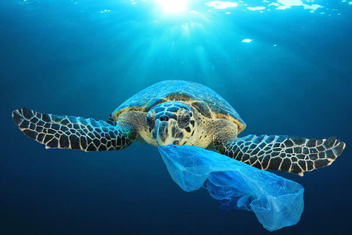

- Destruição de habitat: Uma espécie está bem-adaptada ao seu habitat quando encontra nele os recursos necessários para sua sobrevivência. Ao ter seu habitat destruído, uma espécie pode não ser capaz de encontrar os recursos necessários em outra área, correndo o risco de morrer e, posteriormente, ser extinta.
- Poluição: Assim como a destruição de habitat, a poluição afeta negativamente a sobrevivência dos seres vivos, criando condições não toleradas pela espécie.
- Caça e pesca: Muitas vezes, a caça e a pesca são tão intensas que ocorrem em velocidade maior que uma espécie consegue reproduzir-se e, consequentemente, recuperar sua população. Desse modo, muitas espécies entram em extinção em decorrência dessas atividades.
- Mudanças climáticas: As mudanças climáticas também podem levar ao decréscimo de uma população e, consequentemente, à sua extinção. Observamos claramente como as mudanças climáticas afetam as espécies quando analisamos alguns anfíbios, que são altamente afetados por aumentos na temperatura e pela frequência de chuvas. Um artigo publicado na revista Ecology and Evolution mostrou que as mudanças climáticas poderão levar à extinção 42 espécies de anfíbios anuros na Mata Atlântica e no Cerrado entre 2050 e 2070.
- Catástrofes ambientais: Catástrofes ambientais também podem causar a extinção de várias espécies. Vulcões, terremotos, maremotos, glaciações e impactos de meteoritos, por exemplo, podem causar a morte de várias espécies. No final do período Cretáceo, a queda de um meteorito foi, provavelmente, responsável pela extinção dos dinossauros.